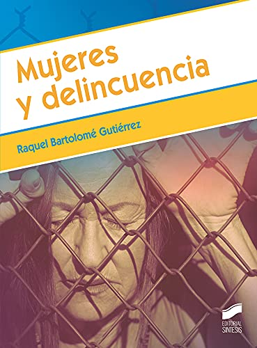
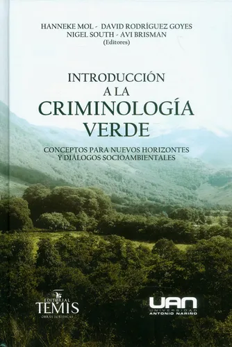
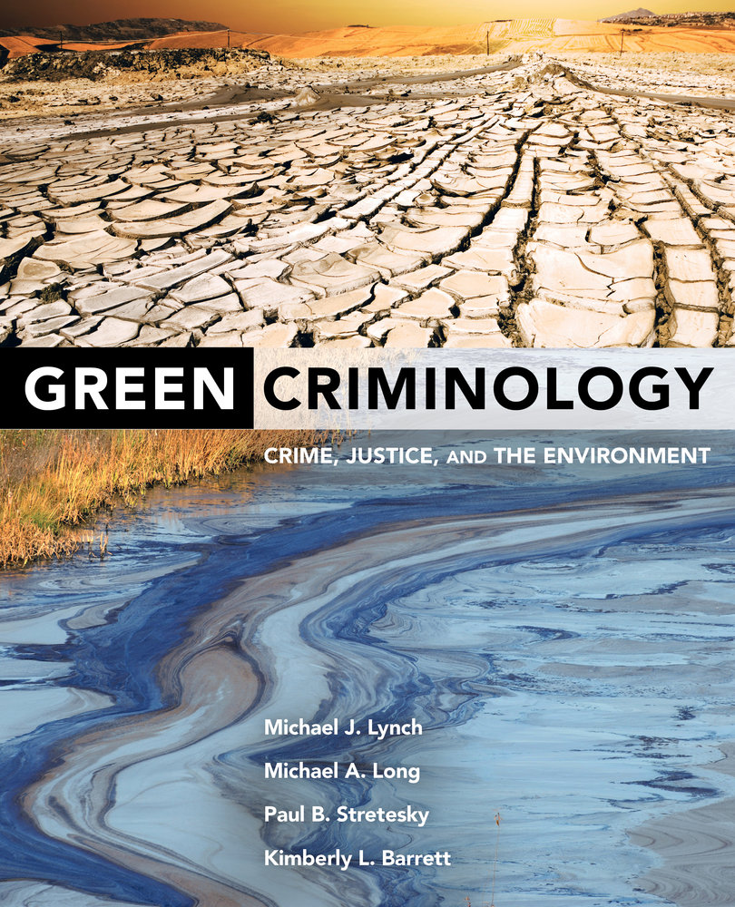
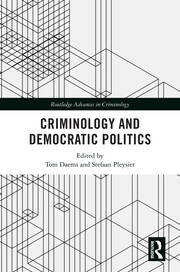
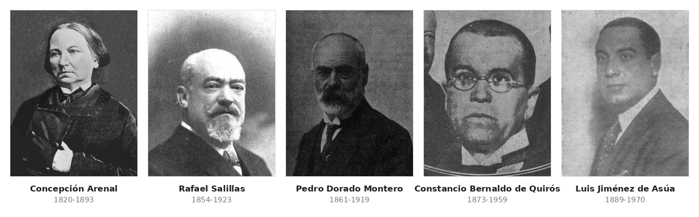
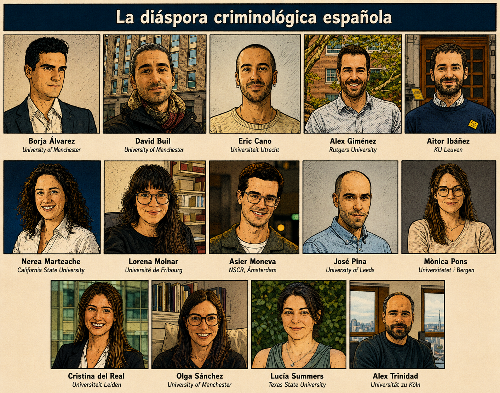

1 ¿Qué es la criminología?
1.1 Definiendo la criminología
Si estás leyendo estas líneas deberías tener una idea de cómo responder esta pregunta, pues este es un libro escrito para estudiantes de criminología a quienes se les debe asumir un mínimo conocimiento sobre de qué va la titulación que han elegido. Pero esas ideas pueden estar contaminadas por relatos públicos que existen sobre la criminología que no se corresponden con la realidad.
Cuando alguien dice en un encuentro social que se dedica a la criminología, suele saber de antemano cómo va a acabar la conversación. Generalmente la cosa deriva hacia las imágenes que el público tiene sobre las criminólogas y lo excitante que tiene que ser capturar a un delincuente. Hollywood, la industria del entretenimiento en general, tiene buena parte de la culpa de esos mitos que existen sobre la criminología. A veces en películas y series televisivas se introducen personajes que dicen ser criminólogas cuando en realidad son otra cosa. A veces eso se debe a un problema de traducción del inglés al español, otras veces es desconocimiento de quienes escriben los guiones. No son criminólogas quienes se dedican a hacer perfiles sobre delincuentes en serie para ayudar a su captura, generalmente son psicólogas forenses. Tampoco son criminólogas quienes se dedican a recopilar y analizar pruebas que puedan servir a consolidar la evidencia probatoria en un juicio para condenar a alguien; suelen ser criminalistas, esto es personas con una carrera técnica (medicina, biología, informática, química, etc.) que pueden aportar sus conocimientos para estos fines y que suelen contar con algún tipo de formación especializada en policía científica. Las criminólogas son otra cosa.
¿Qué es, entonces, la criminología? Podría parecer una pregunta sencilla merecedora de una respuesta simple. Como veremos en realidad existen muchas formas de practicar y entender la criminología, que además han variado históricamente y entre distintos países, por lo que existen distintas formas de responder. No existe tampoco un consenso universal sobre las fronteras de la criminología (dónde empieza y dónde termina) y sobre cuál es su legítimo objeto de estudio. Veremos también que hay distintas formas de entender las relaciones de la criminología con otras disciplinas científicas y su carácter distintivo, así como con sus relaciones en el campo de la práctica profesional, las instituciones de la justicia penal y la administración pública, el activismo social, y el campo de la política.
El eminente criminólogo norteamericano Edwin Sutherland, autor de uno de los más influyentes manuales de criminología del siglo XX, definía la criminología como:
“el conjunto de conocimientos sobre el delito como fenómeno social. Incluye en su ámbito los procesos de elaboración de leyes, de infracción de leyes y de reacción ante la infracción de leyes. Estos procesos son tres aspectos de una secuencia de interacciones algo unificada. Ciertos actos que se consideran indeseables son definidos por las normas políticas. A pesar de esta limitación, algunas personas persisten en ese comportamiento y, por lo tanto, cometen delitos; la sociedad política reacciona con castigos u otros tratamientos, o con medidas preventivas. Esta secuencia de interacciones es el objeto de estudio de la criminología.” (Sutherland 1947, 1).
En manuales españoles más modernos, como el de la profesora Larrauri (2018), se da a entender que la criminología es una ciencia social que obtiene sus conocimientos de la observación y análisis de la realidad de la delincuencia y del funcionamiento del sistema penal. Y de una forma parecida Redondo y Garrido (2023, p.) definen la criminología como aquella “ciencia que estudia los comportamientos delictivos y las reacciones sociales frente a ellos”. Ambas son formulaciones resumidas de lo propuesto por Edwin Sutherland. Por su parte, y con la elegancia y sofisticación que lo suele caracterizar, el escocés David Garland caracteriza a la criminología de la siguiente forma:
“Interpreto la criminología como un género específico de discurso e investigación sobre el delito – un género que se desarrolló durante la modernidad y que puede ser distinguido de otras formas de hablar y pensar sobre la conducta criminal. Así, por ejemplo, la pretensión de la criminología de ser una empresa científica basada en el análisis empírico la separa de los discursos morales y jurídico legales, mientras que su atención hacia el delito la diferencia de otros géneros científico sociales, como la sociología de la desviación y el control, cuyo objeto de estudio es más amplio y no se encuentra definido por el Código Penal. Desde mediados del siglo XX, la criminología de forma creciente ha venido a estar marcada de otros discursos por los adornos de una identidad distintiva, con sus revistas, asociaciones profesionales, cátedras, e institutos de investigación” (Garland 2002a, 8)
Lo primero que tenéis que entender es que no hay nada sagrado o escrito en piedra sobre estas definiciones. Como en muchas otras cuestiones en las ciencias sociales tendréis que juzgar por vosotras mismas lo convincentes que son los argumentos para mantener una postura u otra. El hecho de que haya distintas interpretaciones o respuestas implica que es una cuestión contestada, y que no podemos considerar del todo cerrada. No obstante, podéis ver que hay elementos comunes en estas caracterizaciones.
Dado que esta es una introducción a la materia no podemos simplemente dejaros con la idea de que “hay muchas formas de entender la criminología, vosotras veréis cuál elegís.” Vamos a daros una descripción personal preliminar que utilizaremos en este manual y luego iremos destilando y justificando sus partes. La criminología, para nosotras, puede caracterizarse como:
La criminología es un proyecto intelectual y académico que se ha ido institucionalizando de forma gradual, desigual y creciente, como disciplina o campo de estudio, en distintos países. Entroncada en las ciencias sociales e interconectada de forma constitutiva con otras muchas disciplinas, se ocupa del delito —como evento y como proceso— y daños o ilicitos afines, de las personas y organizaciones que los cometen, de quienes lo sufren, y de las respuestas estatales, sociales y culturales que suscita. Es, además, un producto socialmente determinado: surge cuando surge y como surge por razones históricas concretas; arrastra los sesgos de un canon construido mayoritariamente por hombres blancos y occidentales; y genera conocimientos y prácticas con consecuencias sobre la vida de las personas que hacen imposible ignorar su dimensión política. De ahí que sea hoy un campo irreductiblemente plural.
1.1.1 La criminología como proyecto intelectual y académico
Quizás hayáis notado que hablamos de la criminología como proyecto intelectual y académico, un término más amplio, en lugar de ciencia, como hacen la mayoría de otros manuales. Esto es algo que tiene que ver con debates que existen sobre cuál es la naturaleza legítima del conocimiento criminológico. La razón por la que preferimos esta terminología es porque creemos que es más generosa con las distintas formas de hacer criminología y más abierta a capturar y aceptar las distintas almas de la criminología.
Y es que en las ciencias sociales han coexistido, desde el siglo XIX, dos culturas, dos formas de entenderlas. Una tendencia ha sido acercarse a las humanidades, mientras que otra ha tendido más a un acercamiento a las ciencias naturales. Han coexistido, no de forma pacífica, una forma de conocer el mundo (lo que en términos técnicos se denomina epistemología) idiográfica - que ha destacado la particularidad de todo fenómeno social, la utilidad limitada de las generalizaciones, y la necesidad de la comprensión empática – con una forma de conocer el mundo nomotética -que ha destacado el paralelismo entre los procesos humanos y sociales con los procesos materiales y ha buscado el desarrollo de leyes universales que se puedan aplicar al mundo social.
Como destaca Wallerstein (2004, 19) las ciencias sociales han sido como “alguien atado a dos caballos galopando en dirección contraria”. David Smith (2014) resume bien esta situación dentro de la criminología europea:
“De un lado se encuentran quienes usan el lenguaje y los métodos de la ciencia, mientras que en el otro se encuentran quienes usan el lenguaje y los métodos de las humanidades. Hasta cierto grado, estas dos perspectivas están ligadas a distintas disciplinas académicas” (que contribuyen a la criminología) “pero en algunas instancias representan divisiones dentro de disciplinas establecidas. Así, en el campo de la ciencia están las contribuciones que proceden de la epidemiología, la genética, buena parte de la psiquiatría, la psicología social y experimental, casi toda la economía, y toda sociología que trabaja con estadísticas oficiales y encuestas. En el campo de las humanidades se encuentran buena parte de la sociología, historia, teoría política, la mayoría de los estudios sobre medios de comunicación, y la teoría psicoanalítica. Mientras que disciplinas como la antropología social se encuentran a medio camino. El campo de las ciencias tiene afinidad con la filosofía analítica, mientras que el campo de las humanidades tiene mayor afinidad con la filosofía continental. Hace 20 años el campo de las humanidades (no el de las ciencias) estaba muy influenciado por el marxismo o la teoría crítica, aunque estas influencias han disminuido… Este esquema es una simplificación muy cruda que exagera el contraste y hay autores que se sitúan entre ambos campos. No obstante, es importante tenerla en cuenta porque sirve como una guía útil para mapear la criminología, dado que se corresponde con diferentes métodos de investigación y concepciones de lo que es el conocimiento criminológico. Los que van de científicos usan números, estadísticas, encuestas y experimentos controlados, mientras que quienes se acercan a las humanidades describen eventos particulares y ejemplos singulares en toda su complejidad, insistiendo en matices y detalles (en contrapunto con la idea científica de “precisión”).” (Smith 2014, p.)
Pensamos, teniendo esto en cuenta, que definir la criminología como ciencia parece una forma de posicionarse frente a estas dos formas de entenderla. De hecho, cuando leéis determinados trabajos y la forma en que definen la criminología como ciencia parece que esa es precisamente la intención. Parecería que es una forma de decir que solo el alma “cientificista” de la criminología que ha buscado acercarse al modelo de las ciencias naturales (y que en ocasiones puede representar los intereses del status quo) es la correcta o la adecuada.
![Infografía en viñetas. Arriba, tres bloques comparan a la psicóloga forense, que evalúa el comportamiento individual para los tribunales y la intervención; a la criminalista, que recopila y analiza evidencias físicas y químicas para el proceso judicial; y a las criminólogas, divididas en un enfoque nomotético, que estudia patrones y causas con métodos cuantitativos, y uno idiográfico, que analiza el delito y el control social desde sus contextos históricos, culturales y políticos. Abajo, un panel define la criminología como proyecto intelectual plural; otro representa las dos almas de la disciplina como dos jinetes atados a caballos que galopan en direcciones contrarias, con una cita de Wallerstein de 2004; y un tercero aclara que la criminología no es perseguir villanos, ni perfilar mentes, ni buscar pruebas, sino hacer preguntas difíciles, analizar, comprender y transformar. Un pie de página recuerda que la criminología tiene muchas caras y que todas comparten el compromiso de comprender para transformar.](images/criminologas.png)
Creemos que adoptar esta postura es problemática a nivel normativo (es decir como objetivo a seguir) y a nivel descriptivo (de definir nuestro campo a día de hoy). A nivel normativo es empobrecedor: creemos que ambos enfoques, el cientificista y el que se aproxima a las humanidades tienen mucho que ofrecer para generar conocimiento enriquecedor. Y a nivel descriptivo no reflejaría bien la pluralidad de enfoques que coexisten dentro de la criminología como organización o fenómeno social. De ahí, que prefiramos esta terminología (proyecto intelectual y académico) como más inclusiva.
¿Es la criminología una profesión?
Una consecuencia de caracterizar la criminología como proyecto intelectual y académico es que tenemos que definir a una criminóloga como cualquier persona que investiga en el ámbito académico y se ha especializado de forma demostrable en los temas de estudio de la criminología, con independencia de su titulación.
No estamos la criminología como una profesión, como un conjunto de ocupaciones cerradas a personas graduadas en criminología. El debate sobre si la criminología es una profesión solo lo hemos visto planteado en España (aunque es posible que se de en otros países con un legado cultural como el nuestro). La razón de ello tiene que ver con la manía que tenemos en nuestro país de encasillar y encorsetar (legal y administrativamente) todo, así como con el engranaje legal de nuestro mercado laboral. Ni en el mundo anglosajón ni en Europa central y del norte vamos a encontrar este tipo de debates. Sonaría a marciano.
Sin entrar en debates sobre conceptos sociológicos y teóricos de lo que es una profesión, podemos preguntarnos si hay alguna ocupación laboral que solo pudiera realizar quien se ha graduado en criminología. La respuesta, en nuestra opinión, es un no categórico y rotundo. De entrada, la formación universitaria no es FP, tiene una ambición diferente. Creemos que las titulaciones en criminología deberían capacitar a sus egresadas para desarrollar un amplio espectro de ocupaciones laborales en el campo de la respuesta al delito, pero no creemos que esta capacitación las ponga en una situación que les permita levantar murallas sobre determinadas ocupaciones que solo ellas, por virtud de su titulación, podrían o deberían realizar. En cuanto se profundiza un poco sobre las habilidades, conocimientos y capacidades de cualquier ocupación laboral que las egresadas en criminología quisieran monopolizar se vería que en realidad personas con otras titulaciones también desarrollan, o pueden desarrollar, dichas habilidades, conocimientos y capacidades de forma experta. No hay, por tanto, ninguna ocupación laboral que defina de forma específica a la criminóloga. Aunque es verdad, al mismo tiempo, que su formación debería ponerles en una cierta ventaja competitiva o, cuanto menos facilitarles el acceso, en relación con distintas ocupaciones laborales en el ámbito de la seguridad, la prevención, y la intervención frente al delito tanto en el ámbito público como en el privado. En este sentido la persona con conocimientos criminológicos debería, como mínimo, estar capacitada para:
desarrollar diagnósticos sobre el fenómeno criminal en un determinado marco espacio temporal;
evaluar y gestionar los riesgos y necesidades de intervención de víctimas y delincuentes;
desarrollar mapas de riesgo y vulnerabilidades en el sector público y privado;
diseñar, implementar y evaluar programas de detección y prevención de la delincuencia en contextos institucionales o comunitarios;
analizar, evaluar y desarrollar propuestas de políticas públicas en materia de delincuencia y seguridad.
Otra cosa es que los planes de estudio de los grados de criminología doten al alumnado de estas capacidades de forma adecuada. Ocurre, por seguir con el debate que nos anima, que en España funcionamos, por un lado, con una institución de origen feudal que son los colegios profesionales que aspiran a defender intereses corporativos creados y a monopolizar ciertas ocupaciones para quienes egresan de determinadas titulaciones. Y, por otro lado, contamos con una administración pública que a la hora de hacer convocatorias públicas y de definir sus plantillas laborales lo hace sobre esquemas generados en diálogo y negociación competitiva con estos colegios profesionales. Sucede también que la criminología en España es una recién llegada en esta fiesta y los colegios profesionales ligados a otras titulaciones nos llevan ventaja y han levantado barreras para que las egresadas en criminología puedan trabajar en determinados espacios de la administración pública.
En ese sentido, aunque no creo que la criminología sea una profesión en el sentido aquí indicado, toda egresada en criminología interesada en la promoción profesional de su titulación debería luchar por la creación en su comunidad autónoma de un colegio profesional y colegiarse en dichos órganos para poder reivindicar de forma colectiva y más efectiva un mercado laboral más justo para quienes se especializan en este ámbito disciplinar.
Pero sería un error de bulto que en los colegios profesionales empezáramos a pensar que hay que entrar al juego de levantar barreras. O que acabaran creyéndose que solo es criminóloga la persona a la que, por virtud de su titulación, se le permite colegiarse. Eso iría en contra de lo que se deriva de entender la criminología como un proyecto intelectual y académico abierto a cualquier disciplina científica, algo que no es simplemente un deseo normativo sino una descripción fáctica de la realidad.
1.1.2 La institucionalización de la criminología
Señalamos en nuestra propuesta que la criminología se ha ido institucionalizando de forma gradual, desigual, y creciente en distintos países como disciplina o campo de estudio. Entender que es la criminología puede ser más fácil si entendemos algo sobre su historia. Y también si clarificamos que es eso de una “disciplina”. Parafraseando al sociólogo Immanuel Wallerstein (2004) una disciplina es tres cosas de forma simultánea: categoría intelectual, estructura institucional, y cultura. Una disciplina:
“es una categoría intelectual, una forma de afirmar que existe un campo determinado de estudio con algún tipo de fronteras (por más que sean disputadas, con otras disciplinas, o ambiguas) y con modos consensuados de hacer investigación de una forma legítima… Son construcciones sociales cuyos orígenes han de ser situados en las dinámicas del sistema histórico que les dan forma” (Wallerstein 2004, 166).
Es decir, son creaciones humanas definidas socialmente y que, para entender, como veremos también a continuación, hay que analizar también como objeto de análisis social e histórico (¿Por qué surgen cuando surgen? ¿Quién se beneficia de su aparición? ¿Por qué adoptan la forma que adoptan? ¿Cuáles son sus consecuencias sociales?).
“Las disciplinas son también estructuras institucionales con formas más elaboradas desde finales del siglo XIX” (Wallerstein 2004, 166).
Estas estructuras y elementos que dotan de institucionalidad a la criminología son, por ejemplo, los departamentos universitarios, grados y otras titulaciones universitarias, revistas especializadas, sociedades científicas nacionales e internacionales, colecciones bibliográficas especializadas, premios ligados a la disciplina, congresos y convenciones periódicas, etc. Son el cemento que da concreción a la disciplina como categoría intelectual, “los adornos que dotan de identidad distintiva” a los que se refería David Garland en su definición.
“Finalmente, las disciplinas son culturas. Los investigadores que se definen como miembros de una disciplina comparten algunas experiencias comunes. A menudo han leído los mismos libros ´clásicos´. Existen debates tradicionales bien conocidos dentro de cada disciplina y que son diferentes de los que existen en otras disciplinas. Cada disciplina favorece ciertas formas de hacer investigación sobre otras y recompensa a quienes usan los estilos apropiados. Y aunque la cultura puede cambiar, y de hecho cambia, con el paso del tiempo, en todo momento hay formas de presentación que es probable que sean más apreciadas por los miembros de una disciplina que de los de otra disciplina” (Wallerstein 2004, 166-67).
La criminología ha adquirido los rasgos institucionales propios de una disciplina de forma relativamente reciente, sobre todo en España y en Europa. Uno de los vectores definitorios de la criminología en la actualidad es, sin duda, el notable crecimiento que ha experimentado en las últimas décadas.
Los titulaciones de criminología en España
La criminología como titulación universitaria reglada (como grado y máster oficial) son relativamente recientes. Fuera de nuestras fronteras, sobre todo en el mundo anglosajón, sí que había estudios universitarios oficiales sobre criminología desde hace varias décadas. Por ejemplo, la Escuela de Justicia Criminal de Rutgers University fue una de las primeras escuelas de criminología en Estados Unidos y fue fundada en 1974. En España la irrupción y expansión de estas titulaciones es posterior. Durante los 1990 se produce una proliferación de títulos propios (no reglados y homologados a nivel nacional) de criminología (“Expertos Universitarios”) ofrecidos desde Institutos de Criminología creados prácticamente todos ellos en el seno de Departamentos de Derecho Penal. Estos títulos de duración variable atrajeron un amplio número de personas matriculadas y graduadas, muchas veces procedentes del mundo de la policía o de la administración penitenciaria. El personal académico vinculado a estos Institutos de Criminología -fundamentalmente penalistas, aunque en algunas universidades se consiguió atraer sobre todo a psicólogas- gestó la Sociedad Española de Investigación Criminológica, y contribuyeron al llamado Libro Blanco de la Criminología. Este Libro Blanco proponía un plan de estudios consensuado, criticado por su falta de atención a las destrezas profesionales y el excesivo peso de asignaturas jurídicas (ver Medina 2002), que sirvió de base a la aprobación nacional de una titulación oficial a nivel nacional en criminología. Este reconocimiento finalmente llegó en el 2003, inicialmente como una licenciatura de segundo ciclo, y posteriormente con la aplicación del modelo Bolonia a los grados de 4 años que conocemos hoy. Desde entonces el número de grados de criminología se multiplicó de forma desmesurada y descontrolada para saciar una demanda estudiantil exagerada que estaba demasiado mediatizada por la construcción fantasiosa en la cultura popular de lo que es una criminóloga y las nuevas sensibilidades culturales hacia el delito. La entrada en este mercado de las universidades a distancia y las universidades privadas contribuyeron aún más a magnificar de forma probablemente innecesaria, la oferta existente, para explotar esta demanda exagerada.
Por otro lado, en España todavía no hay departamentos universitarios de criminología. Por el contrario, la docencia en los grados de criminología se reparte entre departamentos diversos (derecho penal, sociología, psicología de la personalidad, etc.), aunque estas unidades organizativas, los departamentos de criminología, sí existen en universidades anglosajonas y europeas.
![Seis gráficos sobre los grados de criminología en España: la matrícula total se duplicó entre 2015-16 y 2021-22, de 12.121 a 24.289 estudiantes, y desde entonces permanece estancada en torno a 24.000 mientras el número de universidades sigue creciendo de 40 a 43; la universidad privada gana matrícula mientras la pública la pierde; entre el 42% y el 54% de los estudiantes cursan a distancia; la UNED, la UOC y la UNIR suman el 38% del total; y la sociología pierde un 22% de su matrícula en el mismo periodo.](images/criminologia_cifras.png)
Pero la criminología como espacio de debate e investigación ha precedido a los grados de especialización en la misma. Así, por ejemplo, aunque no había grados específicos o departamentos universitarios, sí había asociaciones profesionales de científicas sociales especializadas en el estudio de la criminología desde los años 1930. La American Society of Criminology, probablemente la más influyente a nivel internacional, se remonta a 1932 cuando varias personas ligadas al mundo de la policía comenzaron a reunirse de forma esporádica para debatir sobre cuestiones relacionadas con temas propios de la criminología, aunque no fue hasta 1946 que la palabra “criminología” aparecía en el nombre de este grupo (que a lo largo de los años ha ido creciendo y evolucionando de forma que veremos más adelante).
Muchas de estas asociaciones también han ido desarrollando sus propias revistas, como Criminology (fundada en 1963), la revista oficial de la Sociedad Americana de Criminología, o el British Journal of Criminology (fundada en 1960) la revista oficial de la British Society of Criminology.

Es importante destacar que, en todo caso, el pensamiento criminológico, la producción intelectual sobre cuestiones propias de la criminología, precede también a la creación de instituciones como las sociedades de criminólogas, sus revistas especializadas, sus departamentos universitarios, o las titulaciones universitarias en este ámbito - esto es, los distintos elementos institucionales que aspiran a dotar de una cierta autonomía organizativa. Hay quienes remontan los orígenes de este pensamiento al trabajo de autores como Jeremy Bentham (1748-1832) o Cesare Beccaria (1738-1794) durante el periodo de la Ilustración en el siglo XVIII. En este sentido, y con independencia de los adornos institucionales, la criminología como ciencia distintiva o discurso académico apenas tiene un par de siglos.
1.1.4 La naturaleza interdisciplinaria de la criminología
La criminología se encuentra fuertemente enraizada en las ciencias sociales, e interconectada de forma radical con varias disciplinas ¿Si no había grados en criminología hasta el último cuarto del siglo XX o sociedades científicas de criminólogos hasta mediados de dicho siglo como podía haber criminología? ¿Quién hacía criminología? La respuesta a estas preguntas nos puede ayudar a entender la naturaleza de la criminología. Y esa respuesta es que había académicas y científicas de procedencia muy diversa y plural pensando, reflexionando, e investigando sobre los objetos propios de la criminología mucho antes de que la criminología existiera como titulación o disciplina reconocida, antes de que empezara a adquirir grados de institucionalización propia y autónoma.
La criminología siempre ha sido una especialidad ecléctica y multidisciplinaria. El citado Cesare Beccaria, por ejemplo, era “literato, filósofo, jurista y economista” nos dice Wikipedia. Mientras que Edwin Sutherland, uno de los padres indiscutibles de la criminología moderna y con cuya definición de la criminología empezábamos este capítulo, era en realidad sociólogo.
En los planes de estudio de criminología y en vuestras lecturas de trabajos que versan sobre las cuestiones que interesan a las criminólogas veréis que convergen distintas disciplinas: sociología, psicología, ciencia política, economía, derecho, antropología, historia, y un largo etcétera. Cuando os adentréis en vuestros estudios de teoría criminológica podréis ver que a lo largo de la historia de la criminología la disciplina más influyente ha ido cambiando.
Esta pluralidad, no solamente sigue existiendo, sino que muchas pensamos que debe ser cultivada y es enormemente beneficiosa para la criminología, pero también genera dudas y debates sobre la naturaleza de la criminología. Sigue habiendo una contribución muy notable a la criminología realizada desde otras disciplinas como la psicología, la sociología, la ciencia política, la economía, y muchas otras disciplinas sociales y humanísticas hoy en día. Docentes, profesionales e investigadoras con este bagaje (sin un grado o doctorado en criminología) siguen generando reflexiones e investigaciones que son esenciales al desarrollo científico de la criminología y en el ámbito comparado trabajan a menudo como docentes de criminología en los departamentos universitarios de criminología.
No es exagerado señalar que los saltos cualitativos que se han ido produciendo en la criminología durante los últimos 150 años, la historia de la teoría criminológica, ha sido determinada por la suma al proyecto criminológico de nuevas comunidades de científicas sociales. La diferencia es que hoy en muchos países además contamos con académicas y científicas que hacen criminología, trabajan en departamentos de criminología, y algunas de ellas tienen grados específicos en criminología.
Pensar, por tanto, que es necesario haber estudiado formalmente un grado en criminología para poder contribuir a la producción criminológica es ignorar la historia y la realidad plural contemporánea de esta área de conocimiento. En ese sentido, para mí, una criminóloga es cualquier científica social que se ha especializado a lo largo de su carrera en este ámbito de estudio. Existe, relacionado con esto, un cierto debate sobre si la criminología es, por tanto, una disciplina “autónoma” o no, si es una disciplina o es simplemente un campo de estudio en el que confluyen varias otras disciplinas. Hay muchas criminólogas muy notables que piensan que la criminología no tiene el estatus y rango de las disciplinas científico-sociales tradicionales. Garland (2011), por ejemplo, nos dice que no, ya que no tiene un objeto teórico propio o métodos de investigación distintivos (en un sentido parecido, ver también Newburn, 2017).
Es por eso por lo que a veces se discute la criminología usando la metáfora del “punto de encuentro” (Downes, 1988) de disciplinas y especialistas formadas en otras disciplinas más que como una disciplina propia, una metáfora más comúnmente usada por quienes se graduaron o doctoraron en otras disciplinas como la sociología o la psicología. Así, por ejemplo, David Smith (2013) nos dice que:
“La criminología no es una llama sagrada defendida por un grupo selecto de seguidores, ni un sistema unitario y coherente de pensamiento. En su mejor versión, es un grupo de personas que usa un conjunto de herramientas para pensar sobre el delito y sus implicaciones prácticas y teóricas y para testear sus ideas usan la evidencia científica. Su propósito es informar la toma de decisiones políticas y morales. En este sentido, la criminología no es una disciplina académica, sino un ámbito o campo de estudio y los criminólogos tienen una caja llena con las herramientas procedentes de muchas profesiones: la historia, la sociología, la psicología, la psiquiatría, la filosofía del derecho, etc.” (Smith, 2013: 4).
Mientras tanto hay quien, sobre todo quienes tienen su identidad profesional o académica más ligada a la criminología que, en vez de esta metáfora del “punto de encuentro”, ligan la criminología al concepto más técnico de ciencia interdisciplinar. Es decir, reconocen que es un proyecto que se nutre de las aportaciones de otras ciencias sociales y que necesita estar interconectada con ellas, pero admiten que no hay que temer designarla, dado el grado de madurez institucional que ha alcanzado, como una disciplina en sentido propio.
¿Qué pensamos nosotras? En España esta no es una cuestión baladí porque vivimos en un país donde la ley y el procedimiento administrativo encorseta en gran medida la práctica social en mayor grado que en otras sociedades. La definición o no de la criminología como una disciplina (lo que en España en terminología administrativa tradicional se conoce como “áreas de conocimiento” y en desarrollos legales recientes como “especialidades científicas”) tiene consecuencias legales importantes para el desarrollo de carreras académicas y la estructuración de la docencia universitaria. Por tanto, no tenemos el lujo, a diferencia de lo que ocurre fuera de nuestras fronteras, de andarnos con matices. Por cuestiones pragmáticas y legales en España no nos queda más remedio que defender la autonomía de la criminología como una especialidad científica si queremos tener un derecho a existir como investigadoras en este ámbito. Para nosotras, no cabe duda de que este un campo de estudio con un grado de institucionalización como el que existe en otras áreas de conocimiento (lo vimos anteriormente) y que, en ese sentido, merece tener el mismo grado de reconocimiento oficial que otras disciplinas, como el derecho penal, la psicología social, o la econometría, por poner unos ejemplos.
En España, no obstante, aún no es así: no existen departamentos universitarios de criminología, ni existe un “área de conocimiento” o “especialidad científica” en criminología, por más que las criminólogas españolas llevan luchando por ello con las autoridades educativas durante las últimas décadas. En el marco internacional, como hemos dicho, sí que tenemos departamentos de criminología, y (no solo en España) también existen sociedades científicas, revistas especializadas, titulaciones oficiales, congresos científicos y muchos otros elementos de institucionalización que de alguna manera reconocen que este es un campo de estudio maduro: con un cuerpo teórico que nos puede gustar más o menos, y nos puede parecer más o menos original pero que es centenario y que es necesario conocer si se practica la criminología; y con algunas particularidades en el uso de la metodología propia de las ciencias sociales que hay que conocer bien para poder participar de forma informada en sus debates. En este sentido, como campo de estudio merecedor de un reconocimiento oficial es posible defender, en nuestra opinión, que la criminología es una disciplina “autónoma”, relevante, e interesante. Pero lo importante que tenéis que aprender es que esta es una cuestión bastante debatida fuera de nuestras fronteras, por más que en España no nos quede más remedio que tomar una posición más clara para reivindicarnos y poder practicar la criminología con un mínimo de recursos y posibilidades de desarrollo profesional.
En todo caso, no nos cabe duda de que, y aquí lleva toda la razón David Garland () y otros autores, que ofuscarse con la idea de autonomía puede ser perjudicial y conducir a una insularidad innecesaria que vendría acompañada de un empobrecimiento conceptual, teórico, y metodológico – y que a veces puede llevar a la consolidación de perspectivas teóricas que al ignorar los desarrollos en otros ámbitos científicos pueden ser problemáticas. La interconexión con otras disciplinas, el estar al tanto de desarrollos teóricos y metodológicos en las mismas, y el tener titulaciones universitarias multidisciplinares son necesarios incluso si se piensa que la criminología es una disciplina “autónoma”. No deberíamos perder esa conexión con las disciplinas básicas en las que se formaron quienes fundaron la criminología o nos arriesgamos a “estrechar nuestro horizonte intelectual, a aislarnos de debates e ideas centrales en las ciencias sociales y políticas, o generar trabajos carentes de ambición y amplio interés académico” (Loader y Sparks, 11). Ellos también apuntan a un peligro adicional de la ofuscación con la autonomía.. Si nos empeñamos en destacar nuestra desconexión de las ciencias sociales corremos el peligro de que la investigación criminológica y las titulaciones en este ámbito se hagan:
“más vulnerables a las influencias externas y los controlen de forma que orienten al campo hacia la resolución de problemas impuestos políticamente y nos aleja de la generación de problemas inspirados por la curiosidad… bajo esas condiciones la relevancia hacia políticas de la criminología podría parecer que quedaría reconocida, pero su papel y funciones cívicas podría atenuarse y oscurecerse”.
Resumiendo, ambas posturas (la criminología como disciplina versus la criminología como campo de estudio y punto de encuentro de otras disciplinas) son opiniones respetables y personalmente creo que con lo que hay que quedarse, por encima de todo, es con la idea de la necesaria interconexión íntima y profunda que la criminología precisa con otras ciencias sociales. Es imposible que una criminóloga sea experta en todas las disciplinas sociales de las que se nutre la criminología y, en ese sentido, el hacer criminología desde otras disciplinas puede ser particularmente ventajoso en según qué circunstancia porque puedes traer a tus investigaciones un conocimiento más especializado en otra disciplina. Pero en otros contextos, el tener un pie en el patio trasero de muchas otras disciplinas (como debería ocurrir a las graduadas en criminología) también puede ser una ventaja competitiva a la hora de estudiar el delito. Ambas son formas legítimas de formarse y practicar la criminología, con sus ventajas y desventajas. En ciencia social lo normal, de cualquier forma, es trabajar en equipo y cualquier carencia que pueda tener una investigadora a nivel personal se puede compensar teniendo equipos con integrantes que compensen estas carencias.
Departamentos de Derecho Penal y Criminología
En nuestra propuesta de definición también destacamos que es una perspectiva entroncada en las ciencias sociales. Las criminólogas usamos teorías, conceptos, y herramientas metodológicas procedentes de, o muy influenciadas por, otras ciencias sociales. Históricamente surge en el contexto de la filosofía del derecho penal. Posteriormente, durante el siglo XIX, el protagonismo pasa al campo de la psiquiatría, la psicología (inicialmente de la personalidad y diferencial, posteriormente con un mayor peso de la psicología del aprendizaje, la psicología evolutiva, y social), y la sociología, y en las últimas décadas vemos una mayor contribución desde la economía, la geografía, la ciencia política, la antropología, y la historia, entre otras. Al hablar el mismo lenguaje y el usar herramientas similares al de otras ciencias sociales facilita la comunicación y el encuentro de puntos en común con las mismas. Se diferencia así de la ciencia del derecho o jurisprudencia, que fundamentalmente está interesada en el estudio y análisis del ordenamiento jurídico para buscar su adecuada aplicación. ¿Siendo esto así porque los grados de criminología españoles tienen su sede en Facultades de Derecho? La ubicación de los grados e institutos de criminología en Facultades de Derecho que observamos en España, y en algún otro país europeo, es en gran medida un accidente histórico. En aquellos países en los que la criminología cuenta con un mayor respaldo institucional y consolidación social (Estados Unidos, Reino Unido, Países Bajos, etc.) la misma suele ubicarse de forma más clara en las Facultades de Ciencias Sociales. Aunque la criminología española no habría conseguido el reconocimiento institucional que tiene hoy sin el apoyo de visionarios catedráticos de derecho penal que decidieron apostar por la misma, también es cierto que la ubicación de la criminología en Facultades de Derecho en la actualidad condiciona y limita el grado de desarrollo de esta especialidad científica y hace que en los grados se incluyan demasiadas asignaturas con contenidos jurídicos que pueden lastrar la formación del alumnado de estos grados. Es evidente que, desde las sociedades científicas, los colegios profesionales, y las asociaciones de estudiantes de criminología tenemos que luchar por una reforma de estos planes de estudio y porque se creen departamentos universitarios de criminología.
1.1.5 Los temas de la criminología
La criminología se ha venido a ocupar del estudio de la delincuencia y las respuestas a la misma desde sus origenes. Distintas perspectivas teóricas o líneas de investigación han puesto el acento en uno u otro de estos elementos a lo largo de la historia. En la segunda parte de este volumen entraremos a analizar en detalle cada uno de los elementos que han sido temas de estudio de la criminología. Por tanto, aquí tan solo los enumeraremos de forma muy sintética:
El delito. Las acciones u omisiones merecedoras de algún tipo de reproche social y legal, generalmente penal, y que se escenifan como evento en unas coordenadas espacio temporales concretas. Aunque tradicionalmente el énfasis ha sido el delito en sentido estricto, también hay corrientes que proponen el estudio del comportamiento desviado, las infracciones administrativas, o el daño social.
Los delincuentes. Las personas (naturales o jurídicas) que cometen delitos (o infracciones afines), sus características, motivaciones y el contexto en el que operan.
Las víctimas. Las personas que son los sujetos pasivos del delito (o infracciones afines), las consecuencias que el delito tiene para ellas, sus respuestas, y los diferentes mecanismos que la sociedad ha articulado para tratar de dar respuesta a su victimación.
Las respuestas estatales al delito. Fundamentalmente, los procesos de criminalización de determinados comportamientos merecedores de reproche social, el funcionamiento de las instituciones encargadas de dar respuesta a las mismas, etc.
Las respuestas sociales o culturales al delito. El delito no solamente da lugar a respuestas estatales, sino que la sociedad en general reacciona al mismo o trata de controlarlo a traves de mecanismos sociales generalmente de naturaleza informal. El delito tambien ha dado lugar a distintas manifestaciones culturales y estas también son de interés para las criminólogas.
Temas de estudio, no objetos
En este volumen empleamos de forma deliberada el término temas. En ocasiones, se hablan de los objetos de estudio de la criminología, pero pensamos que esto refleja una visión trasnochada, asociada al positivismo criminológico decimonónico, y que ignora que las personas, no son objetos sino subjetos. En palabras de Matza (2010), que aún a día de hoy sirven de crítica de muy buena parte de la criminología:
“La confusión comenzó cuando los científicos sociales primitivos —muchos de los cuales siguen en activo— confundieron el fenómeno que se estaba estudiando —el hombre— y lo concibieron como objeto en lugar de como sujeto. Fue un gran error. Surgieron numerosas teorías que postulaban que el hombre era meramente reactivo y negaban que fuera el autor de la acción, pero ninguna resultó convincente.”
1.1.6 Los sesgos de la criminología
La criminología como hemos visto es un producto de su tiempo, surge fundamentalmente en el siglo XIX y fue desarrollada en paises occidentales, particularmente los Estados Unidos y el Reino Unido, durante el siglo XX en sociedades clasistas, machistas y racistas. Como producto social, no al margen de las sociedades en las que se desarrolla, es evidente que muchas de sus construcciones reproducen y sirven para reproducir este tipo de sociedades. La mirada criminológica, por tanto, nace y se desarrolla condicionada por una serie de sesgos ideológicos.
La criminología durante muy buena parte de su historia se ha preocupado fundamentalmente por la “delincuencia común”, esto es, las formas delictivas más comunes en sectores sociales desfavorecidos. Aunque ya desde los años 1940 empiezan a aparecer voces dentro de nuestra disciplina llamando la atención sobre la delincuencia de los poderosos (Sutherland 1949), el estudio de la delincuencia, si por ejemplo nos atenemos a los estudios publicados en las principales revistas científicas de criminología, sigue estando fundamentalmente centrada a día de hoy en la delincuencia “común”.
La criminología hasta la irrupción con fuerza de voces feministas dentro de la disciplina durante la década de 1970 no prestaba suficiente atención a la mujer como delincuente, víctima o trabajadora del sistema penal. Es solo a partir de esa década que empieza a generarse una criminología feminista orientada a corregir esos sesgos (Renzetti y Buist 2025). Aún más reciente ha sido el descubrimiento de que los varones también tienen género y que solo podemos entender el comportamiento delictivo de los varones entendiendo estas identidades masculinas de género (Messerschmidt 2018). El creciente reconocimiento de otras identidades de género y sexuales también ha venido asociado al desarrollo de una criminologia queer (Buist y Lenning 2022), interesada en entender las mismas desde una perspectiva criminológica.

La criminología de caracter biológico del siglo XIX era indudablemente profundamente racista y contribuyó a través de sus prácticas (Rafter 1997) a legitimar el movimiento eugenésico 2 y la ideología nazi (Rafter 2008).
“Al igual que otros miembros de las clases cultas, la mayoría de los criminólogos del siglo XIX aceptaban los principios del llamado racismo científico, según el cual los blancos son la raza más evolucionada de todas. El racismo científico solía formar parte de las explicaciones evolutivas del comportamiento delictivo: los peores delincuentes son como salvajes, más cercanos a los hotentotes y otros primitivos de piel negra que a los blancos normales, con su sentido moral bien desarrollado.” (Rafter 2011, 151)
Varias autoras han profundizado en como otros conceptos criminológicos posteriores, como la subcultura de la violencia propuesta por Marvin Wolfgang, también contribuían a legitimar estereotipos de caracter racial durante el siglo XX (Covington 1995). Las últimas décadas han visto numerosos esfuerzos orientados a identificar los mecanismos por medio de los cuales el sistema de justicia penal se estructura como institucionalmente racista.
El desarrollo de la criminología en Estados Unidos y el norte de Europa han consolidado una serie de teorías y perspectivas que toman como modelo social el existente en estos países. Son teorías y perspectivas muchas veces bastante provincianas y asentadas en modos de hacer ciencia que dan más importancia a todo aquello que tiene lugar en dichas sociedades (Medina 2011). Se ha tendido a olvidar las experiencias, vivencias y estructuras existentes en otros países del sur global. De ahí que en tiempos recientes haya habido voces demandando el desarrollo de una criminología del sur (Carrington et al. 2018) que sirva para el resto del planeta ignorado en el canón criminológico, autores que defienden perspectivas postcoloniales dentro de nuestra disciplina (Cunneen 2011), o aquellos que proponen la revelancia de una criminología más global (Bowling 2011) e interesada en la comparación de la situación en distintos países (Nelken 2011).
Finalmente, en la sociedad antropocéntrica en la que vivimos estamos tardando demasiado en entender que vivimos en un planeta finito cuyo clima y sistemas ecológicos hemos alterado de forma radical en los últimos doscientos años. Los retos a los que se enfrenta nuestro planeta como consecuencia de la acción humana en su sistema ecológico son los más serios a los que se enfrenta la humanidad. La criminología también puede jugar un papel en entender estos retos. Esta es la visión de quienes proponen el desarrollo de una criminología verde (South y Brisman 2020).


Estos sesgos en la mirada criminológica a los que aludimos en esta sección seran estudiados en mayor detalle en la tercera parte de este volumen, donde dedicaremos un capítulo a cada uno de ellos.
1.1.7 Criminología y política
Una de las cuestiones que ha ocupado a pensadores sociales desde que aparecen las ciencias sociales es el papel de los valores en el desarrollo de las mismas. Aunque hay autores que plantean que la criminología como otras ciencias debe aspirar a la neutralidad política, hay quienes plantean que la criminología es ineludiblemente política. Como señala Loader (2022, 65):
“La relación entre la criminología y la política es básica, incluso interna. Desde este punto de vista, la criminología es un campo de investigación constituido en parte por la política: practicar la criminología implica, inevitablemente, enfrentarse a cuestiones políticas. Esto no significa que toda teorización sobre el crimen y la justicia sea, o tenga que ser, teoría política. Sin embargo, sí significa que toda investigación teórica y empírica sobre el crimen y su regulación plantea cuestiones políticas (y tiene implicaciones para las instituciones políticas) que solo pueden eludirse a costa de comprender plenamente por qué el delito y las respuestas sociales al delito son importantes”
Los procesos de criminalización, la distribucion de recursos sociales asociados con la delincuencia, las respuestas que damos al comportamiento delictivo son procesos decididos politicamente y frente a los que una disciplina que estudia estos procesos no puede permanecer completamente “neutral”.

Cada teoría criminológica lleva implícita en sí un programa político criminal, una forma de concebir el delito y una forma de responder al mismo. Como señala (Medina_25?), los partidarios de distintas teorías criminologicas:
“pueden tener, explícita o implícitamente, visiones muy diferentes, y a veces mutuamente excluyentes, sobre la naturaleza humana, el concepto de una buena sociedad, la prioridad que ha de darse a la seguridad y el orden en el ámbito político frente a otros valores, el papel del Estado, la iniciativa privada, y la sociedad en materia de prevención, las posibilidades de reforma del sistema de justicia penal, la deseabilidad o posibilidad de cambios sociales más amplios, y otras cuestiones que tienen una naturaleza o dimensión ideológica (igualdad, libertad, etc.)”
En la cuarta parte de este volumen profundizaremos en esta cuestión y exploraremos las distintas perspectivas que existen en nuestra disciplina frente a este tipo de cuestiones.
1.1.8 Una disciplina plural
A lo largo del tiempo la criminología ha ido conformándose como una disciplina plural. Quienes hacemos investigación criminológica, como ya hemos apuntado, solemos tener formaciones disciplinarias diversa (criminología, sociología, psicología, económicas, historia, etc.) que parcialmente constituyen nuestra identidad, también (como veremos en el próximo capítulo) tenemos ideas diversas sobre como y hasta que punto se puede conocer el mundo que nos rodea y cual es son los métodos más adecuados para estudiar los objetos de la criminología. Igualmente, los temas que nos interesan dentro de la criminología y las perspectivas teóricas que mas nos persuaden son diversas entre nosotras, así como la forma en la que interpretamos la relevancia de los distintos sesgos en la mirada criminológica a la que he hecho referencia. Es decir, existen numeros vectores que contribuyen a que haya una multitud de “tribus” criminológicas, a menudo asociadas a distintas divisiones o grupos de trabajo dentro de las principales sociedades científicas de criminología o pertenecientes a grupos de investigación separados, que se consideran alternativos a dichas sociedades científicas.
Esta pluralidad, señalado lo que apuntabamos en la sección anterior, a menudo enmascara diferencias de naturaleza política o ideológica, aunque no siempre este es el eje determinante. Existe, como en muchos ambitos de la vida, conflicto. Este conflicto se traduce en diferencias interpretativas en cuanto a marcos teóricos, lo que podemos considerar evidencia científica establecida, y las consecuencias político criminales de dicha evidencia.
Soy de los que piensan que la diversidad y pluralidad de opiniones es enriquecedora y que hay que mantener una actitud humilde y respetuosa (esto es dispuesta a la escucha crítica) frente a las opiniones de otros participantes en la criminología. Desde el punto de vista del alumno o la alumna que se enfrenta por primera vez a esta cacofonía de voces puede ser complicado orientarse. Pero esa es precisamente la función y el trabajo que tenéis por delante en vuestros estudios de criminología. Entrar en este campo de estudio, mapearlo adecuadamente, y a partir de ahí ir desarrollando de forma informada vuestra propia posición en el mismo.
1.2 La criminología en España
1.2.1 Una disciplina ciega a su propio pasado
Existe un relato canónico sobre los orígenes de la criminología española que la mayoría de criminólogos de este país es capaz de recitar. Ese relato identifica una nómina de autores del último tercio del siglo XIX y del primer tercio del XX (Concepción Arenal, Rafael Salillas, Pedro Dorado Montero, Constancio Bernaldo de Quirós o Luis Jiménez de Asúa), sitúa el momento fundacional en la creación de la Escuela de Criminología en 1903, describe las tres primeras décadas del siglo XX como una suerte de “edad de oro” y sostiene que la Guerra Civil y la dictadura franquista interrumpieron bruscamente ese proceso, que no se reanudaría hasta la transición democrática.

El relato no es falso, pero sí incompleto, y conviene entender por qué. En primer lugar, es un relato que apenas descansa sobre lectura efectiva. Los textos clásicos de esos pioneros no forman parte del currículo criminológico español. Aunque Rafael Salillas (1854-1923) da nombre al premio más prestigioso de la Sociedad Española de Investigación Criminológica, es más probable que un criminólogo español haya leído fragmentos de Lombroso o de Beccaria que de Salillas. Somos, en buena medida, un campo ciego a su propio pasado.
En segundo lugar, se trata de una historia escrita casi en su totalidad desde el derecho penal (ver Serrano Gómez 2007; Serrano Maíllo 2018). Estas aportaciones son útiles y perspicaces para conocer las ideas que defendieron unos y otros autores, pero adoptan una definición innecesariamente estrecha de qué cuenta y qué no cuenta como criminología, y son ante todo historias de las ideas: identifican autores, reconstruyen sus contribuciones y las conectan con los debates europeos de su momento, pero no examinan el desarrollo de la criminología como “un tipo específico de discurso inscrito en un conjunto particular de instituciones en una coyuntura histórica determinada” (Garland y Sparks 2000, 197). Lo social y lo político aparecen solo como marcadores de cesuras —la guerra, el régimen—, y no como el contexto que explica por qué ciertos discursos sobre el delito emergen cuando emergen y adoptan la forma que adoptan. De ahí que queden sistemáticamente fuera del relato los alienistas y primeros psiquiatras que escribieron sobre el delito como patología individual, y los higienistas que lo hicieron como patología social, o figuras como Pere Felip Monlau (1808-1871) y Max Bembo (1887-1932). Y de ahí también que solo desde esa definición estrecha pueda afirmarse que durante la dictadura no existieron discursos académicos y gubernamentales reconocibles sobre el delito y el castigo.
Un contrapunto reciente lo ofrece el trabajo de historiadores de la ciencia como Ricardo Campos (2021), cuya reconstrucción de la psiquiatría española y de la construcción del enfermo mental como sujeto peligroso relata, de forma mucho más contextualizada, la parte de nuestra historia que las crónicas anteriores omitían, incluyendo el modo en que ciertos autores proporcionaron una racionalización “científica” a la represión política y social del franquismo. Este es, hoy, uno de los espacios de investigación más fértiles y estrechamente ligado a los esfuerzos por construir una memoria democrática, aunque se desarrolla en foros distintos de aquellos en los que operan la mayoría de criminólogas españolas.
1.2.2 El paisaje actual
Como hemos visto en la sección anterior, el crecimiento institucional de la criminología española en las últimas tres décadas ha sido espectacular. Ese crecimiento ha sido también científico, pero se ha producido de un modo que Rosemary Barberet (2005) caracterizó con una fórmula que sigue siendo exacta veinte años después: una criminología “variada, enérgica y dispersa” entre disciplinas, tradiciones y contextos institucionales.
Esa dispersión no es accidental. Deriva, en primer lugar, de la relación asimétrica que la criminología mantiene con el derecho penal en el campo universitario. La criminología no está reconocida como “área de conocimiento” por la administración educativa española, lo que significa que quienes nos dedicamos a ella desarrollamos nuestra carrera (y somos evaluados en los procesos de contratación, estabilización y promoción) dentro de áreas ajenas y conforme a estándares que no son los de nuestra disciplina. Como los créditos docentes determinan la capacidad de contratación de cada departamento, y son los departamentos de derecho penal quienes concentran la mayor parte de esos créditos en los grados, son también ellos quienes en la práctica controlan las escasas plazas de especialistas (Medina 2026).
Un segundo factor es la práctica ausencia de una criminología administrativa. El grado de compromiso del Estado con la producción de conocimiento sobre el delito y la justicia penal explica en buena medida por qué la criminología se institucionaliza en unos países y no en otros (Medina 2011). España carece de un equivalente al National Institute of Justice estadounidense o al Nederlands Studiecentrum Criminaliteit en Rechtshandhaving neerlandés. Las consecuencias son considerables: la carrera investigadora solo es viable dentro de la universidad; la investigación descriptiva básica que en otros lugares realiza la administración debe hacerla el mundo académico; y carecemos de infraestructuras de datos elementales, empezando por una encuesta nacional de victimización, sin la cual resulta prácticamente imposible mantener una discusión rigurosa sobre los niveles y tendencias de la delincuencia. Las excepciones (el sistema VioGén, las encuestas del Plan Nacional sobre Drogas, o el ecosistema algo más denso que ha generado Cataluña gracias a sus competencias en materia policial y penitenciaria) confirman más que desmienten la regla.
El resultado es una comunidad criminológica menos comunidad de lo que podría ser. Existe un cuerpo importante de investigación de relevancia criminológica realizado por psicólogos, sociólogos, antropólogos sociales, historiadores y politólogos que ni se identifican como criminólogos ni participan en los foros de la disciplina; los estudios sobre terrorismo o sobre corrupción, por ejemplo, se han desarrollado casi enteramente en la ciencia política. Funcionamos como redes separadas, con algunos investigadores actuando de nodos puente, y con menos debate entre enfoques del que sería deseable. A ello se suman la escasez de financiación, unas cargas docentes elevadas, una alta temporalidad y la consiguiente emigración de una parte de las cohortes más jóvenes y prometedoras.

Hay, con todo, mucho que celebrar. La producción criminológica española ha crecido y se ha diversificado, ha ganado presencia internacional y se ha organizado en torno a líneas de trabajo consolidadas (estudios penitenciarios y penología, cibercriminalidad, criminología ambiental, tratamiento y desistimiento, estudios policiales, violencia de género, justicia juvenil, migración y justicia penal) con grupos territoriales reconocibles. Pero quedan también ángulos muertos llamativos, como la criminalidad organizada, el tráfico y la producción de drogas, la delincuencia corporativa, el daño ambiental o el racismo institucional, temas que no han recibido la atención que su relevancia para este país merece.
Conviene cerrar esta panorámica señalando lo que, pese a todo, constituye el activo más sólido de la criminología española. La Sociedad Española de Investigación Criminológica (SEIC), constituida formalmente en el año 2000, es hoy una sociedad científica madura. Reúne a alrededor de doscientos investigadores e investigadoras repartidos por toda España y organizados en grupos de trabajo que cubren buena parte de las líneas de investigación que acabamos de mencionar. Edita desde 2003 la Revista Española de Investigación Criminológica, una publicación revisada por pares y de acceso abierto que ha ido subiendo peldaños en la escalera del reconocimiento científico. Y celebra encuentros anuales (congresos y simposios de asistencia más restringida en años alternos) cuyo nivel ha crecido de forma sostenida y que cumplen además una función que no siempre se valora lo suficiente: son el lugar donde quienes empiezan presentan por primera vez su trabajo, reciben crítica de colegas que no son su director o directora de tesis doctoral o trabajo de fin de grado, y se dan a conocer en sociedad. Para una comunidad tan dispersa como la nuestra, ese espacio de encuentro no es un detalle menor. Juega además un papel clave en la defensa de la criminología y sus intereses como, por ejemplo, se materializa en sus recomendaciones para la reforma de los planes de estudio de los grados de criminología para que doten de competencias más adecuadas a sus egresados.
1.3 A modo de cierre
Empezamos este capítulo con una pregunta que parecía sencilla y lo hemos terminado hablando de la historia de la psiquiatría española, de los sesgos raciales de la criminología decimonónica y del funcionamiento de las áreas de conocimiento del sistema universitario. No es accidental. Si hay algo que esperamos que os llevéis de estas páginas es que la pregunta “¿qué es la criminología?” no se responde consultando un diccionario, sino haciendo con la criminología exactamente lo mismo que la criminología hace con sus temas de estudio: preguntarnos cuándo surge, quién la produce, con qué recursos, al servicio de qué, con qué puntos ciegos, y con qué consecuencias para la vida de las personas.
Esa es, en el fondo, la lección más importante del capítulo, y es una lección de método más que de contenido. El delito no es una categoría natural que estuviera ahí esperando a ser descubierta: es el resultado de procesos sociales y políticos de definición. Pues bien, la criminología tampoco lo es. También ella es una construcción histórica, con unos fundadores concretos y no otros, con instituciones que la sostienen o la asfixian, con una geografía muy desigual, y con una relación con el poder que nunca ha sido inocente. Aplicar a nuestra propia disciplina la mirada crítica que aplicamos al sistema penal no es ombliguismo académico: es la única forma de no confundir lo que sabemos con aquello que nos han enseñado a mirar.
De ahí se derivan tres hábitos que creemos os pueden ser de utilidad en vuestros estudios:
Preguntad siempre de dónde viene el conocimiento que se os presenta. En qué país se produjo, en qué década, con qué datos, quién lo financió y a quién dejó fuera de la fotografía. Una teoría que funciona razonablemente bien para explicar la delincuencia juvenil en Chicago en 1930 no es automáticamente una teoría sobre el ser humano.
Preguntaos qué parte del desacuerdo puede resolver la evidencia y qué parte no. Toda teoría criminológica lleva dentro una idea de la naturaleza humana, del buen orden social y del papel del Estado; buscar la que esté libre de ellas es perder el tiempo. Lo útil no es preguntarse si una teoría es ideológica (todas lo son), sino saber en cada discusión qué se está discutiendo: si dos personas disienten sobre lo que ocurre o sobre lo que debería ocurrir. Muchos debates criminológicos que se presentan como empíricos son en realidad lo segundo, y no se resuelven con más datos.
No confundáis el mapa institucional con el campo intelectual. Buena parte del mejor trabajo criminológico que se hace en España no se publica en revistas de criminología, ni lo firman personas que se presenten como criminólogas. Si limitáis vuestras lecturas a lo que lleva la etiqueta, os perderéis la mitad de la conversación.
Y una última idea. Hemos dedicado bastante espacio a las carencias: los sesgos del canon, la subordinación al derecho penal, la escasez de datos y de financiación, la fragmentación de nuestra comunidad. Puede parecer un panorama poco estimulante para quien empieza. Nosotras lo leemos justo al revés. Un campo maduro, cerrado y bien trillado ofrece poco margen a quien llega con ganas de aportar cosas nuevas; uno como el nuestro (joven, disputado y con huecos evidentes) todavía tiene preguntas importantes que no tienen respuesta. En los capítulos que siguen intentaremos daros las herramientas teóricas, metodológicas e históricas para que podáis elegir alguna que os pueda inspirar a propulsar nuestro conocimiento.
Cubiertas reproducidas al amparo del derecho de cita del artículo 32.1 del Texto refundido de la Ley de Propiedad Intelectual, con fines docentes y de ilustración de la enseñanza. Los derechos corresponden a sus respectivos titulares: Criminology, American Society of Criminology; The British Journal of Criminology, Oxford University Press por cuenta del Centre for Crime and Justice Studies, en asociación con la British Society of Criminology; Revista Española de Investigación Criminológica, Sociedad Española de Investigación Criminológica. Esta figura queda excluida de la licencia CC BY-NC-ND 4.0 del resto de la obra.↩︎
Todas las imágenes están en dominio público y proceden de Wikimedia Commons. Concepción Arenal, autor desconocido. Rafael Salillas, fotografía de Kaulak, publicada en Actualidades, n.º 117, p. 9. Pedro Dorado Montero, España, n.º 139, 13 de marzo de 1919. Constancio Bernaldo de Quirós, fotografía de José Pío Alonso, La Nación, n.º 76, 14 de enero de 1926, p. 3. Luis Jiménez de Asúa, La Gaceta Literaria, 15 de octubre de 1927. Las tres últimas proceden de la hemeroteca digital de la Biblioteca Nacional de España.↩︎